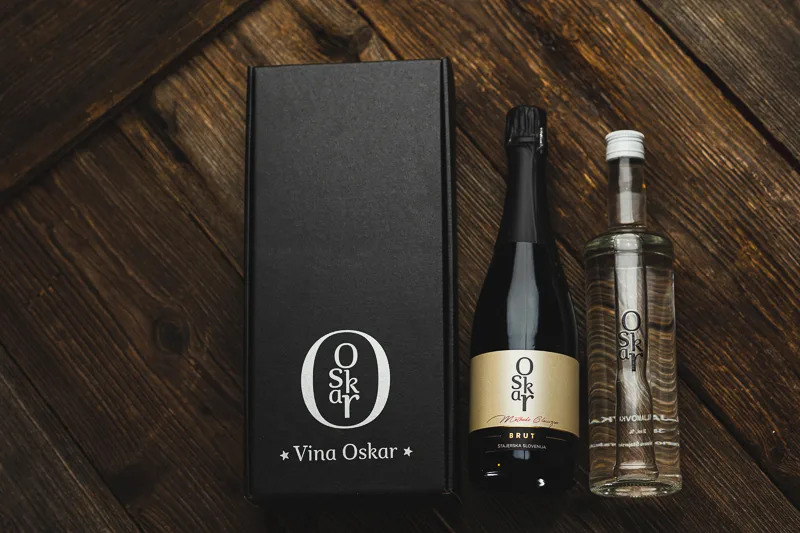
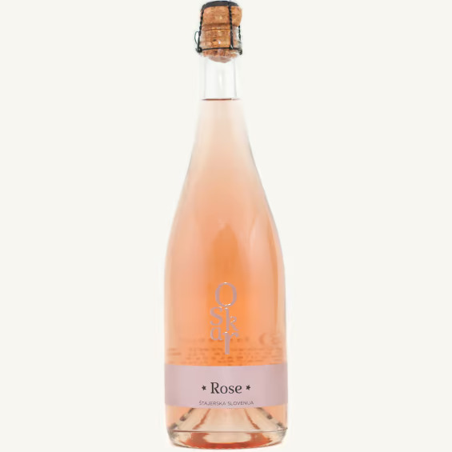

Kmečki turizem
Pristno štajersko gostoljubje v Malečniku
Na našem družinskem posestvu Vina Oskar v objemu malečniških goric vas pričakujemo z odprtimi vrati. Kmečki turizem pri nas združuje pristne lokalne štajerske okuse, voden ogled obokane kleti, pokušino vrhunskih vin in penin ter sproščen oddih v neokrnjeni naravi le streljaj od Maribora.
Ob kozarcu vrhunskega vina vam z veseljem postrežemo pristne domače dobrote: narezke z domačo tünko, suhimi mesninami, siri okoliških kmetij, sveže pečenim domačim kruhom iz krušne peči ter tradicionalno gibanico in sezonskimi jedmi.
Naš ambient je kot nalašč za zaključene družbe, rojstnodnevna praznovanja, obletnice, poslovna srečanja ali družinske izlete. Po predhodnem dogovoru z veseljem pripravimo pogostitev in vinski program po vaši meri.
Naša doživetja & paketi

Vinsko doživetje v kleti
Voden ogled obokane kleti z vinarjem Matejem Markušem, spoznavanje skrivnosti klasične metode penin ter strokovna degustacija 5 vzorcev vin ob domačem prigrizku.
Rezervacija
Domači štajerski narezek
Bogato obložena plošča s pristnimi mesninami iz tünke, domačimi paštetami, siri in svežim kruhom iz krušne peči, pospremljena s kozarcem izbranega vina Oskar.
Rezervacija
Piknik med vinogradi
Sproščen sprehod med terasastimi goricami s čudovitim razgledom na Malečnik in Maribor, z vnaprej pripravljeno piknik košarico domačih dobrot in ohlajeno penino.
Rezervacija